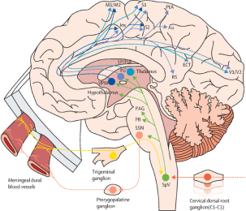
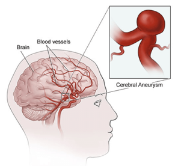

Primary Cause
When you have a migraine, certain blood vessels in your head release chemicals called neuropeptides. These chemicals activate nerves around your brain's protective layer (called the dura). The signals from these nerves travel back to your brain through a large nerve called the trigeminal nerve. This process can trigger a migraine attack." This becomes a cycle which then sustains our headache for hours to days.
When you have a migraine, certain blood vessels in your head release chemicals called neuropeptides. These chemicals activate nerves around your brain's protective layer (called the dura). The signals from these nerves travel back to your brain through a large nerve called the trigeminal nerve. This process can trigger a migraine attack." This becomes a cycle which then sustains our headache for hours to days.
Trigeminovascular system
When you have a migraine, certain blood vessels in your head release chemicals called neuropeptides. These chemicals activate nerves around your brain's protective layer (called the dura). The signals from these nerves travel back to your brain through a large nerve called the trigeminal nerve. This process can trigger a migraine attack." This becomes a cycle which then sustains our headache for hours to days.
Secondary Causes
When you have a migraine, certain blood vessels in your head release chemicals called neuropeptides. These chemicals activate nerves around your brain's protective layer (called the dura). The signals from these nerves travel back to your brain through a large nerve called the trigeminal nerve. This process can trigger a migraine attack." This becomes a cycle which then sustains our headache for hours to days.
Illustration of Brain Aneurysm and AVM
When you have a migraine, certain blood vessels in your head release chemicals called neuropeptides. These chemicals activate nerves around your brain's protective layer (called the dura). The signals from these nerves travel back to your brain through a large nerve called the trigeminal nerve. This process can trigger a migraine attack." This becomes a cycle which then sustains our headache for hours to days.
